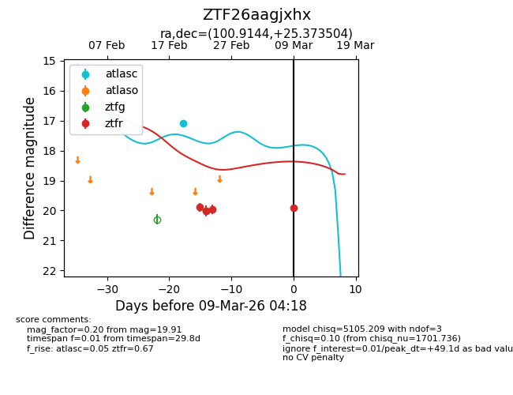
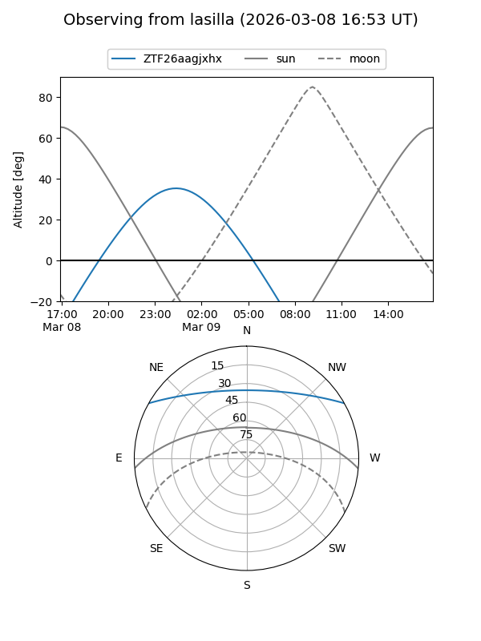
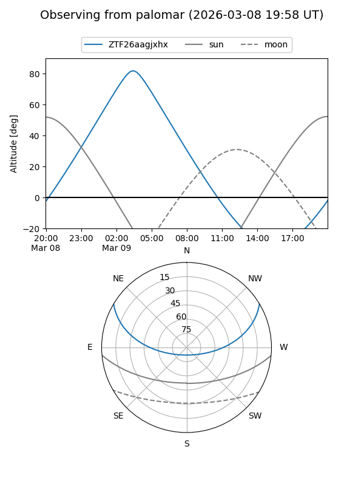
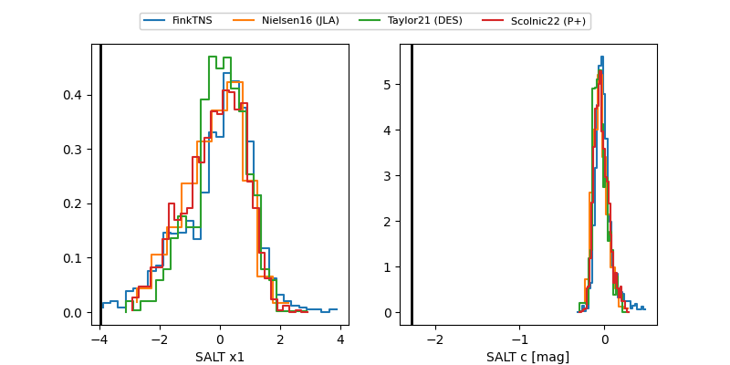

ZTF26aagjxhx
Target ZTF26aagjxhx at 2026-03-09 04:19
Aliases and brokers:
FINK: link
Lasair: link
ALeRCE: link
alt names
ZTF26aagjxhx (ztf,fink_ztf)
Coordinates:
equatorial (ra, dec) = 100.9144,+25.37350
equatorial (HMS+DMS) = 06:43:39.47,+25:22:24.61
galactic (l, b) = (189.2871,+9.67760)
Flags:
Photometry:
last atlasc=17.08, ztfr=19.91
2 atlasc, 4 ztfr detections
Lightcurve

Visibility


Additional plots
